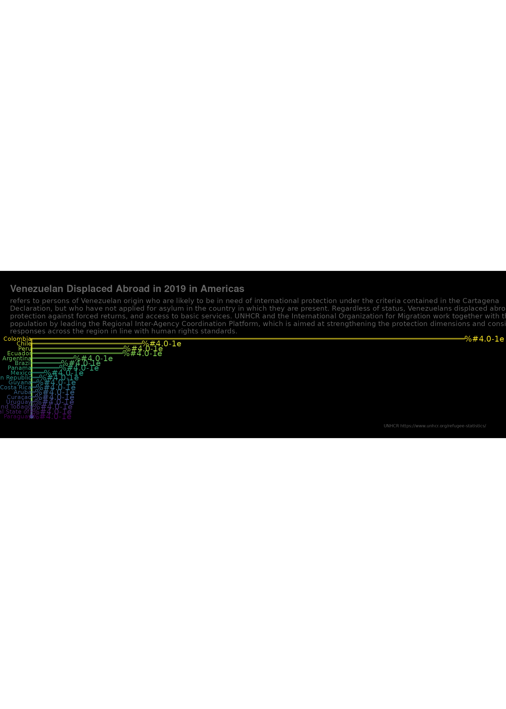

BumpChart.RmdBump charts are good to use to plot ranking over time, or other examples when the path between two nodes have no statistical significance. Also includes functions to create custom smooth lines called sigmoid curves.
pacman::p_load(BBmisc, tidyverse, hablar, ggbump, sf, rnaturalearth, feather, janitor, lubridate, unhcrdatapackage) options(stringsAsFactors = F) # Time series time_series <- unhcrdatapackage::end_year_population_totals reference <- unhcrdatapackage::reference time_series2 <- reshape2::melt(time_series, # ID variables - all the variables to keep but not split apart on id.vars=c("Year", "CountryOriginCode","CountryAsylumCode","CountryOriginName","CountryAsylumName" ), # The source columns measure.vars=c("REF","IDP", "ASY","OOC","STA","VDA"), # Name of the destination column that will identify the original # column that the measurement came from variable.name="Population.type", value.name="Value") data <- merge(x = time_series2, by.x="CountryOriginCode", y = reference, by.y= "iso_3", all.x = TRUE) #names(data) #levels(as.factor(data$REGION_UN)) data2 <- data[ which(data$Year == "2019" & data$Population.type == "VDA" & data$REGION_UN == "Americas" & data$Value > 1000 ), c("CountryOriginCode", "Year" , "CountryAsylumCode", "CountryOriginName", "CountryAsylumName", "Population.type", "Value" )]
sdf <- rnaturalearthdata::countries50 %>% st_as_sf() %>% #st_crop(xmin = -135, xmax = -24, ymin = -60, ymax = 60) %>% ## Crop americas... st_crop(xmin = -135, xmax = -24, ymin = -60, ymax = 33.5) %>% ## Crop americas... filter(iso_a3 %in% data2$CountryAsylumCode) %>% left_join(data2, by = c("iso_a3" = "CountryAsylumCode"))
## although coordinates are longitude/latitude, st_intersection assumes that they are planar## Warning: attribute variables are assumed to be spatially constant throughout all
## geometries#min(sdf$Value) #max(sdf$Value) ranking <- st_geometry(sdf) %>% st_point_on_surface() %>% st_coordinates() %>% as_tibble() %>% bind_cols(tibble(fine_cap = normalize(rank(sdf$Value), range = c(min(sdf$Value), max(sdf$Value)), method = "range"), CountryAsylumName = sdf$CountryAsylumName, xend = -50, x_axis_start = xend + 60, fine_cap_x = normalize(sdf$Value, range = c(first(x_axis_start), 10000000), method = "range"), val_txt = paste0(format(sdf$Value, digits = 0, nsmall = 2)) ))
## Warning in st_point_on_surface.sfc(.): st_point_on_surface may not give correct
## results for longitude/latitude data
#,
# val_txt2 = if_else(country == "Uruguay", paste0(val_txt, "% mobility change"), val_txt)))
sdf2 <- sdf %>%
bind_cols(ranking %>% select(fine_cap))ggplot() + geom_sf(data = sdf2, size = .3, fill = "gray67", color = "gray17") + # Sigmoid from country to start of barchart geom_sigmoid(data = ranking, aes(x = X, y = Y, xend = x_axis_start - .2, yend = fine_cap, group = CountryAsylumName, color = fine_cap), alpha = .6, smooth = 10, size = 1) + # Line from xstart to value geom_segment(data = ranking, aes(x = x_axis_start, y = fine_cap, xend = fine_cap_x, yend = fine_cap, color = fine_cap), alpha = .6, size = 1, lineend = "round") + # Y axis - black line geom_segment(data = ranking, aes(x = x_axis_start, y = 40, xend = x_axis_start, yend = 67), alpha = .6, size = 1.3, color = "black") + # dot on centroid of country in map geom_point(data = ranking, aes(x = X, y = Y, color = fine_cap), size = 2) + # Country text # geom_text(data = ranking, aes(x = x_axis_start-.5, y = fine_cap, label = country, color = fine_cap), hjust = 1, size = 2.5, nudge_y = .5) + geom_text(data = ranking, aes(x = x_axis_start-.5, y = fine_cap, label = CountryAsylumName, color = fine_cap), hjust = 1, size = 3, nudge_y = .5) + # Value text #geom_text(data = ranking, aes(x = fine_cap_x, y = fine_cap, label = val_txt2, color = fine_cap), hjust = 0, size = 2, nudge_x = .4) + geom_text(data = ranking, aes(x = fine_cap_x, y = fine_cap, label = val_txt, color = fine_cap), hjust = 0, size = 4, nudge_x = .6) + coord_sf(clip = "off") + scale_fill_viridis_c() + scale_color_viridis_c() + theme_void() + labs(title = "Venezuelan Displaced Abroad in 2019 in Americas", subtitle = str_wrap("refers to persons of Venezuelan origin who are likely to be in need of international protection under the criteria contained in the Cartagena Declaration, but who have not applied for asylum in the country in which they are present. Regardless of status, Venezuelans displaced abroad require protection against forced returns, and access to basic services. UNHCR and the International Organization for Migration work together with this population by leading the Regional Inter-Agency Coordination Platform, which is aimed at strengthening the protection dimensions and consistent responses across the region in line with human rights standards.", 150), caption = "UNHCR https://www.unhcr.org/refugee-statistics/") + theme(plot.margin = margin(.5, 1, .5, .5, "cm"), legend.position = "none", plot.background = element_rect(fill = "black"), plot.caption = element_text(color = "gray40", size = 6), plot.title = element_text(color = "gray40", size = 14, family = "Helvetica", face = "bold"), plot.subtitle = element_text(color = "gray40", size = 10))
